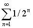

http://khazarzar.skeptik.net/books/kh/aporia.htm
Руслан Хазарзар
Апории Зенона: воз и ныне там
Τὸ κιωούμενον οὔτ' ἐν ᾧ ἐστι τόπῳ κινεῖται οὔτ' ἐν ᾧ μὴ ἔστι. Ζηνων Ελεατης[1]
|
Также см. три статьи по теме одним файлом, там местами подробнее.
Praefatio
Как показывает мой личный опыт, апории Зенона Элейского — идеальный тест на самостоятельность мышления. Причем это — тот самый тест, на котором могут «завалиться» люди с самыми почетными званиями. Мало того, его, как правило, не проходят именно обладатели технических дипломов и степеней, называя Зенона «софистом». Ибо «технари» привыкли оперировать четкими определениями, установленной формализацией и т. д., а апории Зенона — это тот самый гносеологический кошмар, который зрит в самый корень и ставит под сомнение любую формализацию и любые термины. Они требуют мышления, не отягощенного догмами, т. е. самостоятельного мышления. Они показывают разницу между знаниями и разумом, начитанностью и умом.
Апории Зенона не нашли удовлетворительного разрешения и поныне. Причем современные издания, в отличие от советских, с этим соглашаются: «Апории теперь признаются подлинными парадоксами, связанными, в частности, с описанием движения»[2]. Как вы увидите в дальнейшем, все т. н. «разрешения» апорий представляют собой логическую ошибку ignorantia elenchi, состоящую в том, что доказывается не тот тезис, который требуется доказать.
Разумеется, мало сказать, что апории неразрешимы. Мы рассмотрим, какие глобальные вопросы выросли из незамысловатых апорий. Оказалось, что ни математика, ни физика, ни другая наука не могут обезвредить элейских аргументов. Наоборот, сами апории и вытекающие из них вопросы постоянно требуют пересмотра уже устоявшейся формализации. И для разрешения апорий необходимо разрешить основополагающие вопросы: чтó собой представляет мироздание — бытие или становление? чтó такое бесконечность? дискретен мир или непрерывен? как разрешить проблемы пространства и времени? и т. д.
Формулировки апорий Зенона дошли до нас через «Физику» Аристотеля. Нельзя назвать эти формулировки удовлетворительными, и потребность в их пересмотре наблюдалась еще в древности. Так, Темистий (IV в.), Симпликий (VI в.) и Иоанн Филопон (VI в.) в своих комментариях на Аристотелеву «Физику» пытались переформулировать или уточнить аргументы Зенона. Дело в том, что Аристотель, «разрешая» апории, то ли не понял, то ли не захотел понять всю полноту проблем, следующих из аргументов Зенона. Однако я не ставил перед собой задачи реконструировать зеноновские апории, я предлагаю лишь понять, на какие трудности в анализе движения указал Зенон Элейский. Именно указал, ибо о попытке приписать непосредственно Зенону современную постановку проблем движения не может быть и речи. Кстати говоря, эта постановка в логико-философской литературе не отличается единством. Нередко ответственность за парадоксы движения возлагается на неточность используемых понятий: мол, уточним понятия — парадоксы исчезнут. Я, вслед за А. М. Анисовым[3], с этим не могу согласиться: апории Зенона касаются самих основ человеческого миропонимания: они требуют не столько уточнения понятийного аппарата, сколько выбора философской платформы объяснения действительности. А поскольку процесс построения таких платформ, вероятно, будет продолжаться и в будущем, выбор одной из них неминуемо ограничен историческими рамками. Причем сказанное в полной мере относится и к нижеприведенным построениям.
Аргумент к непрерывности
Как известно, Зенон сформулировал четыре основные апории против движения. Свое исследование мы начнем с первых двух апорий, получивших название Διχοτομία и Ἀχιλλεύς и касающихся непрерывности пространства и времени. Прежде всего обратимся к «Физике» Аристотеля (Aristoteles. Physica, Z, 9):
[Διχοτομία]
τέτταρες δ’ εἰσὶν οἱ λόγοι περὶ κινήσεως Ζήνωνος οἱ παρέχοντες τὰς δυσκολίας τοῖς λύουσιν, πρῶτος μὲν ὁ περὶ τοῦ μὴ κινεῖσθαι διὰ τὸ πρότερον εἰς τὸ ἥμισυ δεῖν ἀφικέσθαι τὸ φερόμενον ἢ πρὸς τὸ τέλος.
Дихотомия
«Есть четыре аргумента (λόγοι) Зенона о движении, которые доставляют трудности тем, кто пытается их разрешить. Первый — о невозможности движения, так как перемещающееся [тело] прежде должно дойти до половины, нежели до конца» (239b, 9-13).
[Ἀχιλλεύς]
δεύτερος δ’ ὁ καλούμενος Ἀχιλλεύς· ἔστι δ’ οὗτος, ὅτι τὸ βραδύτατον οὐδέποτε καταληφθήσεται θέον ὑπὸ τοῦ ταχίστου· ἔμπροσθεν γὰρ ἀναγκαῖον ἐλθεῖν τὸ διῶκον ὅθεν ὥρμησεν τὸ φεῦγον, ὥστε ἀεί τι προέχειν ἀναγκαῖον τὸ βραδύτερον.
Ахиллес
«Второй [аргумент] — так называемый «Ахиллес». Он гласит, что медленного [бегуна] никогда (οὐδέποτε) не догонит быстрый [бегун], ибо необходимо, чтобы догоняющий прежде достиг [той точки], откуда стартовал (ὥρμησεν) убегающий, поэтому более медленный [бегун] по необходимости всегда должен быть чуть впереди» (239b, 14-18).
Обратимся прежде к апории «Ахиллес», суть которой восходит к сцене, изложенной в гомеровской «Илиаде»: Ахиллес гонится за Гектором и не может догнать врага (Homerus. Ilias, XXII, 131 et sqq.). А если бы Ахиллес гнался не за быстроногим Гектором, а за тихоходной черепахой? Так вот, согласно апории, Ахиллесу ни за что не догнать черепаху. Аргументы апории сводятся к тому, что, когда преследующий достигнет места, где находился преследуемый в момент старта, догоняемый бегун продвинется, хотя и немного, дальше. Стало быть, на новом небольшом участочке пути Ахиллесу снова придется догонять черепаху. Но пока преследователь добежит до этого второго пункта, беглянка снова переместится вперед. И так далее до бесконечности.
Если профессор математики Степан Александрович Богомолов полагал, что учение Георга Кантора «пролило новый свет на апории Зенона и объяснило в них то, что вообще поддается объяснению», но «было бы поспешным утверждать, что оно опровергло их до конца»[4], то Бертран Рассел, напротив, решил, что апории Зенона, как, впрочем, и антиномии Канта, Кантором обезврежены[5]. С мнением Рассела нельзя согласиться, ибо, во-первых, Зенон, как и Кант, вовсе не обязан был понимать бесконечность непременно актуально. А во-вторых, сам Рассел, приписав в эссе «Mathematics and the Metaphysics» элейскому мудрецу положение, из коего якобы исходил Зенон, а именно, что целое содержит в себе большее количество элементов, нежели часть[6], — сам Рассел полагал, что решение апории «Ахиллес» заключается в определении равномощности части и целого. Однако Зенон в апории исходил вовсе не из того положения, что Ахиллес, чтобы догнать черепаху, должен побывать в большем количестве мест (пересчитать большее число элементов), нежели черепаха, а потому Рассел, «разрешая» апорию, удивительным образом не коснулся ее сути, как не касается сути апории и сформулированный Расселом «парадокс Тристрама Шенди» («The paradox of Tristram Shandy»).
Не будем забывать, что сам Кантор под множеством понимал «вообще всякое многое, которое можно мыслить как единое, т. е. всякую совокупность определенных элементов, которая может быть связана в одно целое с помощью некоторого закона». Само множество он определял как «нечто, родственное платоновскому εἶδος или ἰδέα, а также тому, что Платон... называетμικτόν», противопоставляя «его ἄπειρον’у, т. е. безграничному, неопределенному», называемому Кантором «несобственно бесконечным»[7]. Немецкий математик, подчеркивая «бытийный» характер множества, вводил понятие «завершенного (fertig) множества», которое, по его словам, является «актуально существующей целостностью (aktuell existierende Totalität)». Под завершенными множествами он понимал такие множества, «для которых объединение (Zusammenfassung) всех элементов в некоторое целое, в некоторую вещь для себя, становится возможным»[8]. По мнению Кантора, множество «состоит из определенных, четко отличных друг от друга конкретных вещей или абстрактных понятий, называемых элементами множества», причем это множество мыслится не только как некая «вещь для себя»[9], но и как «множественность, в рамках которой все элементы могут быть помыслены без противоречия как существующие вместе (als zusammenseiend)». «Я говорю о множестве как о завершенном, — писал Кантор, — и такие множества, если они содержат бесконечно много элементов, я называю «трансфинитными»... Таким образом, множество должно мыслиться как единая вещь в себе, т. е. должна существовать возможность помыслить множество как актуально существующую целостность всех его элементов»[10].
По-видимому, тонкая аналитика Рассела изменила ему потому, что он был под огромным впечатлением блестящих идей Кантора об актуальной бесконечности. При этом Рассел совершенно проигнорировал тот существенный момент, что тенденция навязать геометрическое понимание времени привела к распространению канторовской бесконечности на временную сферу, где она неприменима. Это хорошо видно из самих рассуждений Рассела в «Mathematics and the Metaphysics», когда он формулирует «парадокс Тристрама Шенди».
У английского писателя Лоренса Стерна в его известном романе «Жизнь и мнения Тристрама Шенди, джентльмена» герой, обнаружив, что для описания двух первых дней своей жизни ему потребуется два года, сокрушался по поводу того, что материал его биографии будет накапливаться быстрее, чем он сможет его обработать, и он никогда не сможет ее завершить. «Теперь я утверждаю, — говорит Рассел, — что если бы он жил вечно и его работа не стала бы ему в тягость, даже если бы его жизнь продолжала быть столь же богатой событиями, как вначале, то ни одна из частей его биографии не осталась бы ненаписанной»[11].
По сути, как и отметил С. А. Богомолов, в этом выводе нет ничего парадоксального или даже дискуссионного: действительно, каждому дню описания найдется соответствующий год жизни, а значит, любой день описания рано или поздно будет зафиксирован в биографии. Однако Рассел упускает из виду, что при такой постановке вопроса жизнеописание не может быть закончено, а значит, нельзя рассматривать события жизни Тристрама Шенди как актуальное бесконечное множество. Подобный актуально-безвременный взгляд на временные события приводит к ошибочному предположению, что последовательность событий, которая не может быть завершена, может рассматриваться как целое.
Кроме того, считая «парадокс Тристрама Шенди» «конверсионным» (converse) апории «Ахиллес», Рассел не говорит четко, каким же образом разрешается апория. Впрочем, из общего рассуждения можно заключить, что при равномерном движении на каждом этапе местоположению Ахиллеса будет соответствовать местоположение черепахи и что на бесконечном числе этапов Ахиллес так или иначе должен побывать во всех тех точках пути, в которых была черепаха. Однако из этого актуально-безвременного логического рассуждения никак не следует возможность события их встречи, т. е. одновременного нахождения в одной точке. И уж конечно, ничто не дает права рассматривать «Ахиллесовы догонялки» как нечто законченное, завершенное, актуальное, ибо Зенон как раз считал, что этот процесс завершиться не может, и его аргумент так и не оспорен. Значит, актуализируя бесконечность, оппоненты Зенона в данном случае просто-напросто допускают логическую ошибку ignorantia elenchi: нельзя опровергать один принцип, исходя из положений другого принципа.
При потенциальной бесконечности, т. е. при условиях, заданных Зеноном, апория неразрешима. Но ведь условия, заданные Зеноном, безупречны с точки зрения логики. Посылка может быть либо ложной, либо универсальной. Ложность посылки никто не утверждает. Но если она универсальна, то вывод логически верен, ибо обратное утверждение противоречит универсальности посылки, что абсурдно. А потому аргумент, что ошибка Зенона якобы заключается в том, что предел бесконечной последовательности не является членом этой последовательности, есть не утверждение ошибки Зенона, но как раз его правоты: действительно, предела «догнал» в рассуждениях Зенона не получается. Логически все безупречно.
При рассмотрении проблем, связанных с апорией «Ахиллес», мне однажды пришлось встретиться еще с одним аргументом, суть коего сводилась к следующему: «У нас в условии апории произведено деление на бесконечное число частей. Поэтому то, что мы не можем указать, на каком конечном этапе бегун догонит черепаху, не может служить основанием для утверждения о том, что он не догонит ее за бесконечное число этапов. Доказательство от противного здесь неприменимо, мы не можем доказать, исходя из посылок, ни справедливость утверждения, ни справедливость отрицания. Кажущееся логичным рассуждение о том, что раз бегун не догоняет черепаху на конечном числе этапов (мы не можем указать конечный этап, на котором он ее догонит), то он не догонит ее и на бесконечном числе, является порочным кругом: доказывается ровно то утверждение, что кладется в основу». Т. е. ставится под сомнение закон исключенного третьего, дающий основание доказательству от противного (что, кстати, само по себе уже ставит рассуждения Зенона в ряд парадоксов). Но ведь аналогичным путем в математике постулируются сходящиеся суммы: никто не может прямым путем доказать то, что они не превысят своего предела, это постулируется от противного. На каждом из этапов Ахиллес не догоняет черепаху, причем число этих этапов потенциально бесконечно. А потому мы не только не можем указать конечный этап, на котором Ахиллес догонит черепаху, мы знаем, что такой этап невозможен, ибо противоречит посылке. И здесь нет никакого порочного круга как логической ошибки, здесь именно «доказывается ровно то утверждение, что кладется в основу». Circulus vitiosus как ошибка возможен при условном допущении посылки, а в апории посылка — бесспорна. При этом всякая логика тавтологична, если верна, и выводит ровно то, что в нее заложили. Т. е. мы снова возвращаемся к тому, с чего и начали: для опровержения апории необходимо опровергнуть посылку, а она-то как раз и неоспорима.
Конечно, если отрешиться от классического закона исключенного третьего, то нельзя прямым путем доказать, что Ахиллес не догонит черепаху. Но это отнюдь не устраняет поставленной в апории проблемы: поскольку из опыта мы знаем, что Ахиллес непременно должен догнать черепаху, то должны ответить на вопрос, как это возможно в рамках рассуждений Зенона.
Другой небезынтересный аспект — тривиальность самой апории «Ахиллес»: мол, речь всегда идет о догоняющем Ахиллесе, а догоняющий (потенциальная бесконечность), разумеется, — и не догнал. Но, с другой стороны, если, как в математическом анализе, уже «дано» (актуальная бесконечность), то и говорить не о чем — апория разрешается, фактически, путем постулирования наличия решения. Но такое «решение» не менее тривиально рассуждений Зенона. Беда в том, что тривиальны оба варианта, и выходит, что в обоих случаях мы получаем ровно то, что постулируем. Но нетривиальность данной апории в том, что Зенон показывает невыводимость актуальной бесконечности из потенциальной. В то же самое время из опыта мы знаем, что догоняющий, если он быстрее, становится догнавшим и перегнавшим. И проблема описания движения в апории «Ахиллес» остается — во всяком случае, до тех пор, пока не будет постулирована дискретность пространства и времени.
Кстати сказать, проблема несовместимости принципов дискретности и непрерывности остается и поныне. Показательно, что в современной физике понятия дискретности и непрерывности «выводятся» из знаменитой формулы E = mc2: мол, если любая масса материи обладает соответствующей ей энергией движения, то у проточастиц, еще не вступивших во взаимодействие, вся энергия будет кинетической, а самодвижение в пространстве и во времени непрерывным; и наоборот, следствием перехода энергии из кинетической в потенциальную является ограниченность соответствующего движения, т. е. его дискретность. Вот таким вот образом наука пытается разрешить проблему, причем оперирует понятиями, неразрывно связанными как с идентичностью тела, так и с движением, тогда как ни то ни другое до сих пор не объяснено, о чем мы еще будем говорить ниже.
А сейчас давайте примем следующие условия. Пусть Ахиллеса отделяет от финиша расстояние 1, а черепаху — ½. Двигаться Ахиллес и черепаха начинают одновременно. Пусть для определенности Ахиллес бежит в 2 раза быстрее черепахи. Тогда, пробежав расстояние ½, Ахиллес обнаружит, что черепаха успела за то же время преодолеть отрезок ¼ и по-прежнему находится впереди героя. И т. д.
Знающие математический анализ обычно указывают, что ряд

сходится к 1. Поэтому, дескать, Ахиллес преодолеет весь путь за конечный промежуток времени и, безусловно, обгонит черепаху. Действительно, в передаче Аристотеля весьма неопределенно выглядит выражение «никогда (οὐδέποτε) не догонит», и, по всей вероятности, это — интерпретация апории самим Стагиритом, ибо он «разрешает» апорию как раз вышеуказанным образом.
Однако вряд ли следует считать, что сам Зенон не понимал этого, и уж наверняка он обращал внимание совсем на другое. «Никогда не догонит» — не значит бесконечное течение времени, но отсутствие такой возможности в рамках данного рассуждения. Парадоксально, но, согласно апориям, и время не превысит своего предела. А парадокс не опровергается его констатацией. Констатацией он как раз утверждается. К сожалению, многих настолько приучили опровергать путем приведения к противоречию, что они и сами противоречия (парадоксы) готовы «опровергать» подобным же образом. Ведь можно переформулировать апорию следующим образом: «Никогда не пройдет одна секунда, ибо когда пройдет полсекунды, останется полсекунды, когда пройдет половина полсекунды (¼), останется ¼ секунды...» и т. д.
Парадокс опровергается демонстрацией того, за счет чего он существует. Необходимо указать принципиально неверное утверждение в рассуждениях Зенона, а не демонстрировать путем других рассуждений или эмпирики, что Зенон пришел к противоречию — Зенон об этом и сам прекрасно знал и сам же об этом говорил. Мало показать, как парадокс не существует, т. е. как его можно обойти путем интерпретаций, ибо перевод проблемы в иную систему (аксиом, координат, запретов и т. п.) нельзя считать разрешением парадокса: нужно исследовать парадокс в той системе, в которой он именно существует. В противном случае, мы будем говорить, что победили дракона, обезвредив всего лишь мелкую ящерицу.
Как верно отметил теоретик прагматизма Уильям Джемс, критика Зеноновых соображений, гласящая, что если бесконечный ряд, составленный из интервалов времени, имеет конечную сумму, то, следовательно, Ахиллес должен догнать черепаху, «совершенно не попадает в цель. Зенон вполне охотно согласился бы с тем, что если черепаху вообще можно догнать, то ее можно догнать, например, в двадцать секунд; но тем не менее он настаивал бы, что ее нельзя догнать вообще»[12]. Действительно, из того факта, что весь интервал времени, который отпущен ему для этого деяния, имеет конечную меру, автоматически еще не следует вывод о том, что он в самом деле может исчерпать эту последовательность.
Наконец, формулировку апории можно изменить, не меняя сути ее проблемы: «Самый быстрый бегун не сможет догнать самого медленного (хотя при этом он не будет прекращать движения), ибо догоняющий должен прежде достичь того места, откуда сдвинулся убегающий, так что более медленный будет впереди».
В то же самое время вышеозначенное рассуждение, что сумма бесконечного числа временных интервалов все-таки сходится и, таким образом, дает конечный промежуток времени, абсолютно не затрагивает один существенно парадоксальный момент, а именно парадокс, заключающийся в том, что некая бесконечная последовательность следующих друг за другом событий, последовательность, завершаемость которой мы не можем себе даже представить (не только физически, но хотя бы в принципе), на самом деле все-таки должна завершиться. Апория не ставит вопрос о пределе и его вычислении, апория спрашивает: как этот предел в принципе возможно достичь?
Суть проблемы заключается в интеграции бесконечного количества частей, а математический анализ рассматривает дифференциацию уже определенной, а значит, и актуализированной бесконечности: целое приращение уже дано, и остается только делить — причем, в случае с бесконечно малыми величинами, уже не актуально, а потенциально! — его на части; в то время как Зенон задается вопросом, а как это целое из таких частей составить (а уже потом пробовать его делить)? Получается, само решение возможно только при завершении процесса, т. е., по сути, возможно только при актуальной бесконечности, а это не что иное, как «разрешение» апории путем постулирования наличия решения. Согласно общим аргументам Зенона, мы не можем получить ни Δs, ни Δt, а потому вообще не можем обратиться к математическому анализу. Значит, «разрешение» апорий с помощью математического анализа есть не что иное, как логическая ошибка circulus vitiosus.
Аргумент, что в математическом анализе о достижении переменной значения предела в определениях предела ничего не говорится, здесь значения не имеет, ибо математический анализ в данном случае просто-напросто обходит неудобный момент, напрямую связанный с апориями, путем его игнорирования. Конечно, современное определение математического анализа, которое отрешилось от темпорологических понятий («статическая теория переменной» Вейерштрасса) и, по сути, отождествило предел бесконечной последовательности с самой последовательностью, устранило математическую (но не более!) проблему, связанную с вопросом, достигает ли переменная своего предела. Однако, преодолев подобной актуализацией интуитивную зависимость понятия предела от понятия движения, математический анализ просто-напросто отстранился от тех вопросов, которые как раз были поставлены апориями, что лишний раз доказывает совершенную неприменимость математического анализа для разрешения проблем движения и, в частности, апорий Зенона, ибо, в противном случае, математическому анализу снова придется обратиться к темпорологическим понятиям и соотношению своих абстракций с категориями движения. То, что ныне из математики изгнаны представления о процессах и изменении величин, в результате чего переменная стала пониматься как обозначение для произвольного элемента рассматриваемой предметной области (напр., области натуральных или действительных чисел), т. е. как родовое имя всей этой области, а не как динамически изменяющаяся величина, — это напрямую связано с теми проблемами, которые впервые были поставлены Зеноном и которые так и не удалось разрешить. В данном случае современная математика всего-навсего опирается на абстракцию актуальной бесконечности, позволяющую рассматривать произвольные бесконечные множества в качестве «завершенных», актуальных объектов, отвлекаясь от принципиальной незавершимости процесса образования такого множества, т. е. игнорируя те проблемы, которые связаны с апориями.
Хорошо это или плохо — зависит от того, какие цели мы перед собой ставим. Ныне математика уже достигла той стадии развития, когда вопрос о том, что, собственно, следует считать математикой — логицизм, интуиционизм, формализм или теорию множеств, — вызывает ожесточенные споры[13]. Но как бы то ни было, мы должны раз и навсегда уяснить, что современный математический анализ не может быть применим для разрешения парадоксов Зенона: ввиду того что представления о времени и движении уже не считаются имеющими отношение к пониманию математического анализа и сам он не содержит их в себе, научные аргументы, относящиеся к основаниям математического анализа, уже неприменимы к вопросам, связанным с природой времени и движения.
Английский физик-космолог Джеральд Уитроу по этому поводу отмечает, что в настоящее время математики в общем согласны с тем, что трудности, связанные с основаниями математического анализа, на которые впервые обратил внимание Джордж Беркли, критикующий в своем «Аналитике»[14] как Ньютонов метод флюксий, так и анализ Лейбница, — эти трудности не были решены надлежащим образом вплоть до XIX века, пока Коши, Дедекинд, Кантор, Вейерштрасс и другие не придали фундаментальным математическим понятиям значительно большую строгость, которой им до этого не хватало. Все эти математики придерживались формалистической точки зрения на природу своего предмета. В частности, они отрицали Ньютоново понимание математического анализа как научного описания порождения величин. «Поэтому, — заключает Уитроу, — выигрыш в строгости, которого они достигли, был связан с исключением временных понятий»[15].
Что касается апории «Дихотомия», то она основывается на схожих с «Ахиллесом» аргументах и утверждает невозможность начать движение: для того чтобы пройти весь путь, движущееся тело сначала должно пройти половину пути, но чтобы преодолеть эту половину, надо пройти половину половины и т. д. до бесконечности. Иными словами, при тех же условиях, что и в предыдущем случае, мы будем иметь дело с перевернутым рядом точек: (½)n, ..., (½)3, (½)2, (½)1. Если в случае апории «Ахиллес» соответствующий ряд не имел последней точки, то в «Дихотомии» этот ряд не имеет первой точки. Стало быть, движение не может начаться. А поскольку, согласно элеатам, движение не только не может закончиться, но и не может начаться, движения нет и быть не может!
Аргумент к дискретности
Проанализировав апории «Дихотомия» и «Ахиллес», мы обнаружили, что обе они опираются на допущение о непрерывности пространства и времени в смысле их бесконечной делимости. Без допущения тезиса о том, что любой пространственный или временной интервал можно разделить на меньшие по длине интервалы, обе апории рушатся.
Как справедливо отмечает Л. В. Бобров[16], в свое время атомистика Демокрита была реакцией на выпады элейской школы. Демокрит был провозвестником атомизма не только в физике, но и в математике, причем обосновывал необходимость атомистического миропонимания ссылкой не на физические явления, а на чисто математические затруднения, возникающие в том случае, если считать пространство непрерывным. В дозеноновском естествознании все тела считались беспредельно делимыми. Это с одной стороны. А с другой — допускалось, что каждый предмет состоит из бесчисленного множества непротяженных и далее неделимых «телец». На эти-то противоречивые принципы и обрушились элеаты.
В частности, они говорили, что если тело делимо беспредельно, то оно должно быть бесконечно большим. Как бы далеко ни заходило дробление, всякий раз будут получаться протяженные частицы, размеры коих никогда не обратятся в ноль. Поскольку же деление бесконечно, постольку и геометрических «атомов» будет бесчисленное множество. А если так, то сумма бесконечно большого количества протяженных и далее неделимых элементов окажется неизмеримо огромной. Если же, наоборот, точка как предел деления не имеет размеров, то сложение любого сколь угодно большого количества таких «нулей» никогда не даст протяженного тела.
Аргументы элеатов произвели ошеломляющее впечатление. И наконец, школа Демокрита попыталась восстановить теоретический фундамент геометрии. Она сделала то же, что делали все последующие поколения «опровергателей» Зенона, — отмахнулась от элейских искушений. Предел делимости материи и пространства был провозглашен сызнова. Так в ответ на сугубо негативную элейскую критику появилась позитивная платформа, на которой можно было — худо ли, бедно ли — дальше возводить храм математики и механики. Но тут Аристотель взял и ниспроверг эту вроде бы конструктивную платформу, провозгласив свой континуум! Что ж, он был по-своему прав: ведь противоречия, подмеченные элеатами, делали позиции Демокрита очень и очень шаткими.
Так в чем же заключается зеноновская критика? Автор апорий понимал, что первые две апории («Дихотомия» и «Ахиллес») имеют смысл только при допущении непрерывности пространства и времени, а потому привел также аргументы, исходящие из принятия допущения о дискретности пространства и времени, т. е. допущения о существовании элементарных, далее неделимых длин и времен. Эти аргументы заключены в третьей и четвертой апориях.
Обратимся снова к «Физике» Аристотеля (Aristoteles. Physica, Z, 9) и вначале рассмотрим четвертую апорию, получившую название Στάδιος:
[Στάδιος]
τέταρτος δ’ ὁ περὶ τῶν ἐν τῷ σταδίῳ κινουμένων ἐξ ἐναντίας ἴσων ὄγκων παρ’ ἴσους, τῶν μὲν ἀπὸ τέλους τοῦ σταδίου τῶν δ’ ἀπὸ μέσου, ἴσῳ τάχει, ἐν ᾧ συμβαίνειν οἴεται ἴσον εἶναι χρόνον τῷ διπλασίῳ τὸν ἥμισυν.
Стадий
«Четвертый [аргумент] — о равных телах, движущихся по стадию в противоположных направлениях параллельно равных [им тел]; одни [движутся] от конца стадия, другие — от середины с равной скоростью, откуда, как он думает, следует, что половина времени равна двойному» (239b, 33-36).
Из дальнейших рассуждений Аристотеля и комментариев к этому месту Симпликия (Simplicius. In Aristotelis physicorum libros commentaria, 1016, 9) можно в общих чертах восстановить рассуждения Зенона[17]. Суть их сводится к следующему.
Рассмотрим следующую схему, на которой каждая клетка таблицы представляет неделимый блок пространства. Имеется три ряда объектов А, В и Г, занимающих по три блока пространства, причем первый ряд остается неподвижным, а ряды В и Г начинают одновременное движение со скоростью v в направлении, указанном стрелками:
|
|
А1 |
А2 |
А3 |
|
|
В3 |
В2 |
В1 |
|
→ |
|
← |
|
Г1 |
Г2 |
Г3 |
(0) Начальное положение
|
|
А1 |
А2 |
А3 |
|
|
|
В3 |
В2 |
В1 |
|
|
|
Г1 |
Г2 |
Г3 |
|
Ряд Г, утверждает Зенон, за неделимым момент времени прошел одно неделимое место неподвижного ряда А (место А1). Однако за то же самое время ряд Г прошел два места ряда В (блоки В2 и В3). Согласно Зенону, это противоречиво, т. к. должен был встретиться момент прохождения блока В2, изображенный на следующей схеме:
|
|
|
|
|
|
|
|
В3 |
В2 |
В1 |
|
|
|
|
Г1 |
Г2 |
Г3 |
(0/1) Промежуточное положение
Но где в это промежуточное положение находился ряд А ? Для него просто не остается соответствующего места. Остается либо признать, что движения нет, либо согласиться с тем, что ряд А делим не на три, а на большее количество мест. Но в последнем случае мы вновь возвращаемся к допущению о бесконечной делимости пространства и времени, снова попадая в тупик апорий «Дихотомия» и «Ахиллес». При любом исходе движение оказывается логически невозможным[18].
Вообще, строго говоря, положение (0/1) возможно при том условии, если мы, учитывая относительность движения, положим, что ряд Г неподвижен, а ряды А и В двигаются в его направлении, причем ряд А двигается со скоростью v, а ряд В — со скоростью 2v.
Дж. Уитроу, считая апории «Дихотомия» и «Ахиллес» «истинными парадоксами»[19], полагал, что апория «Стадий», «несмотря на все ее остроумие, решается довольно просто». По его мнению, если пространство и время состоят из дискретных единиц, то в этом случае относительные движения должны быть таковы, что переходы типа 0 → 1 — АА могли случаться в последующие моменты. «Отрицание Зеноном этой возможности основывается не на логическом законе, а просто на ошибочной апелляции к «здравому смыслу». В самом деле, прибегая к этой апелляции, Зенон сам фактически совершил логическую ошибку, так как в действительности он молчаливо предполагает постулат непрерывности, который несовместим с гипотезой, принятой в начале рассуждения. Как это ни странно, но если мы примем такие гипотезы, то движение будет представлять собой прерывную последовательность различных конфигураций, как в кинофильме, и ни в какой момент времени не будут существовать промежуточные конфигурации. Переход электрона с одной орбиты на другую рассматривается в элементарной теории атома Бора именно как переход такого типа»[20].
Многих подобное объяснение удовлетворило, ибо, согласно ему, промежуточное положение (0/1) вовсе не обязано наличествовать в какой-то момент времени, а предположение о его отсутствии непротиворечиво. Однако здесь, как и всегда в случае с апориями, упускается один существенный момент: Зенон не говорил о непротиворечивости других схем, он предлагал рассмотреть данную, которая также непротиворечива, а потому рассуждения Уитроу есть очередное отмахивание от элейских искушений.
Действительно, поставленный Зеноном вопрос абсолютно правомерен с логической точки зрения: если возможно продвижение одного тела относительно другого (в данном случае объекта В относительно объекта Г) на одну «дискрету» пространства, то, стало быть, проходит некоторый интервал времени, а значит, совершенно правомерен вопрос, как изменилось и изменилось ли вообще положение объекта А относительно объектов В и Г за этот промежуток времени? Если положение объекта А изменилось, то мы приходим к отмеченному Зеноном противоречию. Если же не изменилось, то движущееся тело некоторый конкретный промежуток времени просто покоилось в одной точке, что, как мы покажем ниже при рассмотрении третьей апории, само по себе противоречиво и, мало того, неописуемо при рассмотрении положения (0/1).
В квантовой механике этот вопрос решается путем постулирования максимально
возможной скорости — скорости света c. Согласно этому
постулированию, движущиеся друг навстречу другу со скоростью c
объекты приближаются друг к другу все с той же скоростью c, а не
2c, ибо, согласно теории относительности, никакие объекты не могут
приближаться друг к другу (или удаляться друг от друга) со скоростью, большей
скорости света. Однако здесь мы имеем дело со сциентической онтологизацией
теории относительности, онтологизировать, абсолютизировать которую нет
совершенно никаких оснований. Вывод о существовании якобы непреодолимого
«светового барьера» зиждется на сугубо формальных основаниях: подкоренное
выражение релятивистского коэффициента  при v ≥ c обращается в нуль или приобретает
отрицательное значение. Относительная скорость одного объекта относительно
другого — это та скорость роста расстояния между объектами, которую наблюдает
наблюдатель, двигаясь с одним из объектов. Однако специальной теории
относительности не противоречит положение, что два объекта могут разлетаться с
почти двукратным превышением скорости света, если их разлет наблюдается из
третьей системы отсчета. (Правда, в данном случае встает проблема наблюдения
обоих объектов одновременно.) Короче говоря, никаких ограничений в
скорости не существует, если не считать скорость распространения сигналов для
наблюдателя[21].
при v ≥ c обращается в нуль или приобретает
отрицательное значение. Относительная скорость одного объекта относительно
другого — это та скорость роста расстояния между объектами, которую наблюдает
наблюдатель, двигаясь с одним из объектов. Однако специальной теории
относительности не противоречит положение, что два объекта могут разлетаться с
почти двукратным превышением скорости света, если их разлет наблюдается из
третьей системы отсчета. (Правда, в данном случае встает проблема наблюдения
обоих объектов одновременно.) Короче говоря, никаких ограничений в
скорости не существует, если не считать скорость распространения сигналов для
наблюдателя[21].
Теперь, наконец, мы подошли к третьей апории, именуемой Ὀϊστός, — третьей по счету, но отнюдь не по важности (Aristoteles. Physica, Z, 9):
[Ὀϊστός]
τρίτος δ’ ὁ νῦν ῥηθείς, ὅτι ἡ ὀϊστὸς φερομένη ἕστηκεν. συμβαίνει δὲ παρὰ τὸ λαμβάνειν τὸν χρόνον συγκεῖσθαι ἐκ τῶν νῦν.
Стрела
Третий [аргумент], упомянутый ныне, [гласит], что летящая стрела неподвижна. [Этот вывод] вытекает из предположения, что время слагается из [отдельных] «теперь» (239b, 30-32).
Суть апории «Стрела» заключается в следующем: в каждый момент полета стрела занимает определенное место и покоится в нем; стало быть, движение стрелы есть сумма состояний покоя, т. е. стрела не движется.
Часто современные математики и физики торопятся «урезонить» античного смутьяна аргументом, что Зенон-де просто не умел оперировать «бесконечно малыми величинами» и что движущееся тело обладает отличной от нуля «мгновенной скоростью», и в этом-де все дело. Но давайте порассуждаем, не является ли это тем самым случаем, когда «поспешишь — людей насмешишь»?
Действительно, в дифференциальных исчислениях мы оперируем понятием «бесконечно малая величина», т. е. оперируем функцией, рассматриваемый предел которой равен нулю. При этом Δt устремляется к нулю, Δs — тоже. Однако любое отношение Δs/Δt, сколь малым, но все-таки конечным ни было бы Δt, дает лишь среднюю скорость на каждом участке, а «мгновенную скорость» мы можем получить только в пределе. Но мы уже говорили, рассматривая апорию «Ахиллес», что, сколько бы мы ни оперировали понятием предела, в конце концов мы обязаны признать, что пределом переменной мы называем постоянную величину, к которой переменная неопределенно приближается, никогда ее не достигая. Как я уже отметил, аргумент, что в математическом анализе о достижении переменной значения предела в определениях предела ничего не говорится, здесь значения не имеет, ибо математический анализ в данном случае просто-напросто обходит неудобный момент, напрямую связанный с апориями, путем его игнорирования. С другой стороны, какой смысл таится в отношении бесконечно малых величин — ds/dt, введенном Лейбницем? Здесь и числитель и знаменатель — вроде бы... нули!.. Но ведь отношение нулей — абсурд... Не случайно выражение

смущает любого, кто действительно пытался понять его смысл в соотношении с физическими реалиями. Характерно, что в XVIII в., когда бурно обсуждалась природа этой самой бесконечно малой, Вольтер со свойственным ему остроумием определил математический анализ как «искусство считать и точно измерять то, существование чего непостижимо для разума»[22].
Не лишним будет отметить, что в книге выдающихся математиков Рихарда Куранта и Герберта Роббинса «Что такое математика?» сказано однозначно, что дифференциалы в качестве бесконечно малых величин «из математического обихода изгнаны теперь окончательно, и не без позора»[23]. Уточняя понятия анализа, мы удалились от идей Лейбница и Ньютона и пришли к торжеству элейских апорий, разве что слова «Ахиллес не догонит черепаху» на современный язык переводим как «переменная не достигает своего предела». Отмахиваясь от апорий Зенона на протяжении двух с половиной тысячелетий и объявляя их пустыми софизмами, человеческий разум только показывал свою трусливую беспомощность пред гениальным прозрением античности.
«Еще со времен Зенона и его парадоксов, — говорят Курант и Роббинс, — все попытки дать точную, математическую формулировку интуитивному физическому или метафизическому понятию непрерывного движения были безуспешными. Нет затруднений в продвижении шаг за шагом по дискретной последовательности значений а1, a2, a3 ... Но когда приходится иметь дело с непрерывной переменной х, пробегающей целый интервал значений на числовой оси, то описание того, как х «приближается» к заданному значению x1, затруднено тем, что принимаемые значения из интервала не могут быть указаны последовательно в порядке их возрастания. В самом деле, точки прямой представляют везде плотное множество, и не существует точки, «следующей» за данной. Остается неизбежное расхождение между интуитивной идеей и точным математическим языком, предназначенным для того, чтобы описывать ее основные линии в научных, логических терминах. Парадоксы Зенона ярко обнаруживают это несоответствие»[24]. А потому аргумент оппонентов Зенона, что мы не может в плотном множестве определить порядок точек прямой, а следовательно, апория «Стрела», дескать, не имеет смысла, — этот аргумент должен быть поставлен не в укор античному философу, а в заслугу его прозрению, поставившему столь великий вопрос, который на протяжении многих веков столь бездарно пытаются похоронить видимостью псевдоответов.
Как бы то ни было, мы должны признать, что, если «бесконечно малая величина» — это функция (а так оно и есть), то она является всего лишь математической абстракцией, совершенно не имеющей никакого физического смысла. Стало быть, не имеет никакого физического смысла понятие «мгновенная скорость». А значит, все это не отменяет Зенонова положения, что в любой момент времени t стрела находится в строго определенных точках пути, и в этих точках она вполне неподвижна. Надо отметить, что выдающиеся мыслители чувствовали это. Напр., такой тонкий аналитик, как Бертран Рассел, фактически прямо признал то, что Зенон отрицал в качестве парадокса: «... we live in an unchanging world and... the arrow, at every moment of its flight, is truly at rest»[25]. Кроме того, серьезно беспокоила проблема «теперь» Эйнштейна, и он так и не смог ее решить, считая, что научные описания не могут удовлетворить наши человеческие потребности и что с «теперь» связано нечто существенное, лежащее за пределами науки[26].
Таким образом, в ответ на укоризненное для нас прозрение древних мы должны признать, что несмотря на то, что в механике мы постоянно оперируем дифференциальными исчислениями, тем не менее мы совершенно не в состоянии объяснить физический смысл понятий этих исчислений. Точно так же, как и по сей день не можем описать движение. Мы должны признать, что современная наука менее критична, чем элеаты, ибо не соглашается считать движение чем-то большим, чем нахождением в разные моменты времени в разных местах. Но это — бунт на коленях. Фактически современная наука приняла выводы элеатов, забыв о том, откуда и как они были получены, изменив при этом терминологию и назвав движением то, что элеаты не могли позволить считать таковым[27]. Не случайно Бергсон настаивал на том, что необходимо различать описание результатов движения и описание движения как особого процесса или акта. По мнению Бергсона, наука в принципе не способна постичь движение как процесс или акт: «Механика по необходимости оперирует с уравнениями, а алгебраическое уравнение всегда выражает совершившийся факт. Между тем сама суть длительности и движения, какими они предстают нашему сознанию, заключается в процессе непрерывного становления; алгебра же может выражать в своих формулах результаты, полученные в определенный момент длительности, и положение, занимаемое в пространстве движущимся телом, но она не в состоянии выразить саму длительность и само движение»[28].
Вернемся, однако, к апории «Стрела». Один из аргументов против этой апории, который мне довелось услышать, гласит, что мы в данном случае имеем дело с классическим примером необоснованной попытки применять интуитивные представления при рассуждении о движении: для того чтобы иметь право сказать о том, что стрела занимает определенное место, нужно обладать хотя бы принципиальной возможностью указать, какое именно положение занимает любая точка поверхности стрелы — напр., ее «оконечные» точки, а это просто-напросто бессмысленно из-за принципа соотношения неопределенностей, сформулированного в 1927 году Вернером Гейзенбергом и, разумеется, неизвестного Зенону; бессмысленно рассматривать на абстрактном уровне микрочастицу с точки зрения классической механики, отнимая у микрообъекта его волновой характер.
Перед нами типичный образец сциентической презумпции превосходства над древностью. Действительно, согласно принципу соотношения неопределенностей, невозможно одновременно точно определить координату и импульс частицы, а потому состояние частицы определяется волновой функцией, имеющей вероятностный характер. Но представители сциентизма в попытке онтологизировать научную модель, т. е. подменить реальность гносеологической системой, совершенно упускают из виду, что из положения, что в науке мы не можем одновременно определить координаты и импульс частицы, а потому вынуждены описывать квантово-механические процессы через Ψ‑функцию, имеющую вероятностный характер, еще никак не следует, что сама частица превращается в нечто математическое и вероятностное.
В данном случае не лишним будет отметить, что, согласно мнению инструменталистов, теории ничего не говорят о «реальности». Они представляют просто языковое средство для упорядочения наблюдаемых в эксперименте явлений в определенного рода схему, которая будет эффективно функционировать при предсказании новых наблюдений. «Теоретические термины являются удобными символами. Постулаты, содержащие их, принимаются не потому, что они «истинны», а потому, что полезны. Они не имеют никакого дополнительного значения, кроме способа функционирования в системе. Бессмысленно говорить о «реальном» электроне или «реальном» электромагнитном поле»[29]. Такие противники метафизики, как прагматисты и логические позитивисты, исключают из научных теорий то, что представители диалектического материализма назвали бы «реальным референтом в виде объективной сущности явлений»[30], — исключают, справедливо считая научные теории не более чем гносеологическими системами. Таким образом неопозитивисты снимают то противоречие, которое неизбежно, напр., при одновременной онтологизации классической и квантовой механик. Классическая механика и квантовая механика — два гносеологических взгляда на одну и ту же реальность. Нет двух реальностей — микромир и макромир, есть два подхода к реальности, два ее описания. Т. е., если мы не пытаемся в данный момент получить некоторых определенных экспериментальных данных, квантово-механический взгляд на микрообъект не имеет приоритета над классическим. Причем последний является частным случаем общенаучного взгляда на микромир. В классической электродинамике электрон ведет себя как частица, движение которой подчиняется уравнениям Лоренца – Максвелла, имеет массу и даже классический радиус. Согласно принципу дополнительности, сформулированному Нильсом Бором, объектам квантовой механики присущи как корпускулярные, так и волновые свойства, однако они проявляются в различных, несовместимых экспериментальных условиях[31]. Но крайне ошибочно было бы утверждать, что наука якобы договорилась до того, что микрообъект в реальности в разных ситуациях превращается то в частицу, то в волну, будучи при этом чем-то срединным, ибо наука в различных ситуациях рассматривает микрообъект то как частицу, то как волну. Все это — гносеология, а не онтология, и среди многочисленных гносеологических взглядов на бытие существует и классическая механика. А в классической механике под материальной точкой разумеют объект пренебрежимо малых размеров, имеющий массу, — без уточнений его физической сущности. Даже если за микрообъектом видеть именно электрон (хотя в этом нет никакой необходимости), но электрон в классическом понимании, т. е. частицу с определенной массой и классическим радиусом, то отмеченные в эмпирике трудности, обнаруженные еще Бором, отнюдь не говорят о полной непригодности классической системы, но только об ограниченности ее применения — причем применения именно в эмпирике. Если же считать, что классическое описание движения материальной точки не имеет смысла, то впору задаться вопросом, зачем на курсах теоретической механики до сих пор изучают механику материальной точки?..
Таким образом, мы должны выбрать одну из систем механики, а именно ту, которая вытекает из условий задачи. Это совершенно отвечает строгости мышления: для того чтобы рассматривать предложенную задачу, необходимо оставаться в ее рамках, в рамках предложенных ею условий — во всяком случае, до тех пор, пока не будет показано, что они неприемлемы по внутренним причинам или по причине доказательства их онтологической несостоятельности. В противном случае, мы будем решать другую задачу, а значит, не имеем права ничего говорить о предложенной.
Рассмотрим еще один из псевдоаргументов против апории. Утверждают, что
летящая стрела в каждый момент времени отлична от покоящейся стрелы, ибо
у них разные продольные размеры тел. Мол, размеры l всех тел, покоящихся
в L, оказываются в L' сокращенными в  раз в направлении v:
раз в направлении v:
В данном случае в очередной раз приходится констатировать, что за формулами не видно сути. Действительно, что означает в этой формуле v ? При относительности движения можно сказать, что у стрелы v = 0 (стрела покоится), а у окружающей среды — отличная от нуля. Т. е. получается, что продольный размер стрелы напрямую и полностью зависит от того, какую часть v мы положим стреле, а какую — окружающей среде. Говоря более точным языком, справедливость принципа относительности означает, что различие между состояниями покоя и равномерного прямолинейного движения не имеет онтологического содержания. Если физическая система В движется равномерно и прямолинейно (со скоростью v) относительно системы А, то с тем же правом можно считать, что А движется относительно В (со скоростью v).
Впрочем, даже не в этом дело. Следует просто задаться вопросом: стрела побывала во всех точках («дискретах») пути?.. Что она там делала, пусть даже с другим продольным размером?..
Разбирая данную апорию, прежде всего мы должны признать, что тело, преодолевшее неких промежуток дискретного пространства, побывало во всех точках-«атомах» этого промежутка, ибо, в противном случае, тело было «размазано» по некоторому отрезку, т. е. аморфно. Затем мы должны признать, что тело не могло двигаться в рамках каждой отдельной точки-«атома», ибо продвижение, напр., на пол-«атома» невозможно уже хотя бы потому, что у самого движущегося тела нет такой части — пол-«атома», — которая могла бы продвинуться. Так чтó же делало тело, когда было в определенной точке, если не могло двигаться в ее рамках? Ничего, отвечают оппоненты Зенона, ибо чтó можно сделать за нулевой промежуток времени (мол, мы не можем даже утверждать, что тело покоилось в этой точке, ибо в отдельной точке мы не можем отличить движение от неподвижности)?
Но ведь промежуток времени не нулевой, а меньший «дискретного» параметра (величины хронона)[32]. Хотя, по сути, в этот «промежуток времени» (не нулевой, но меньший величины хронона) «застывает» и само время, т. е. в этот «промежуток» нет и самого времени. И если утверждение Зенона, что движения нет, повергает в недоумение, то вывод, что нет времени, — тем паче.
Апория «Стрела» показывает нам, что в дискретной модели мира объект даже не прыгает из точки в соседнюю точку, а исчезает из одной точки и появляется в другой (в противном случае мы приходим к непрерывности). По сути, это два разных объекта, ибо между ними нет связи, непрерывности, идентичности, а это в корне противоречит интуитивному пониманию движения, ибо никто не называет движением исчезновение одного объекта в одном месте и появление другого объекта в другой точке. Движение мыслится и понимается нами как движение одного и того же тела, ибо движение — это атрибут движущегося тела и может быть только изменением отношений между телом и средой, окружающей его. Мы можем говорить о движении в той мере, насколько тело сохраняет свою идентичность, противополагаясь в различных соотношениях своему окружению.
Пытаясь критически понять природу движения, мы неминуемо приходим к противоречию. Морис Мерло-Понти предлагает провести следующий мысленный эксперимент[33]. Предположим, мы бросаем камень, он на мгновение становится удаляющимся предметом, напоминающим метеор, а затем, когда падает на землю на некотором расстоянии, вновь становится камнем. Если мы хотим осознать этот феномен, то его необходимо разложить на составные части. Мы должны предположить, что сам камень в движении не изменяется. Поскольку камень, который мы держали в своей руке и который обнаружили на земле в момент окончания его полета, — один и тот же, то, стало быть, он является тем же самым камнем, который передвигался в воздухе. Движение, как уже было сказано, это только атрибут движущегося тела и невидимо в самом камне, а значит, не существует движения, отличного от движущегося тела, которое бы переносило его от начальной точки к конечной, сохраняя свою непрерывность. Поскольку движение никоим образом не присуще движущемуся телу, а всецело заключается в его отношениях со своей окружающей средой, оно не может обойтись без внешнего указателя. Если различия между телом в движении и движением установлены, то не существует ни движения без движущегося тела, ни движения без внешнего указателя, ни абсолютного движения.
Тем не менее наши рассуждения приводят нас фактически к отрицанию движения. Для того чтобы точно отличить движущееся тело от движения, необходимо, строго говоря, утверждать, что «движущееся тело» не движется. Как только мы привносим идею движущегося тела, которое остается в течение своего движения одним и тем же, аргументы Зенона вновь обнаруживают свою актуальность. В этом случае бесполезны возражения о том, что мы не должны рассматривать движение как последовательность дискретных позиций, соотносящихся с последовательностью дискретных моментов времени, и что пространство и время не состоят из совокупности дискретных элементов. Даже если мы рассматриваем два завершенных последовательных момента и две фиксированные примыкающие точки, то все равно между ними в каждом случае существует различие, несмотря на то, что оно меньше любого заранее заданного количества, а их дифференциация находится в начальной стадии.
Идея движущегося тела, идентичного во всех фазах движения в качестве простого явления, исключает феномен «сдвига» и предполагает идею пространственной и временной позиций, которые всегда идентичны в себе, даже если они не являются таковыми для нас, и, стало быть, такое положение камня, которое всегда существует и никогда не изменяется. Даже если мы создадим математический способ, позволяющий зафиксировать неопределенную множественность позиций и моментов, то все равно невозможно понять сам акт перехода, имеющий место в одном и том же движущемся теле, который всегда осуществляется между двумя моментами и двумя позициями, независимо от того, в какой близости друг от друга мы их выбираем. Таким образом, пытаясь отчетливо мыслить движение, мы не можем понять, как возможно его начало, и то, как оно может быть дано нам как феномен.
Postfatio
Как бы то ни было, мы должны признать, что элеаты относились к описанию движения более критично, нежели современная механика, которая не может дать вразумительного ответа, каков физический смысл «нульмерной» точки или «бесконечно малой величины». Понимая вслед за Галилеем движение как совокупность «продвинутостей», т. е. как нахождение объекта в разные моменты времени в разных местах, наука, по сути, трактует движение так же, как описал его Зенон в апории «Стрела». Но если наука ставит здесь точку и оставляет проблему описания движения за собственными рамками, то скрупулезность элеатов идет дальше и показывает нелепость такого понимания движения. И поэтому, увы, мы и по сей день не избавились от парадоксов, связанных с описанием движения. А ведь незнание движения, по словам Аристотеля (Aristoteles. Physica, Г, 1), необходимо влечет за собой незнание природы (200b, 14-15). И мы никак не можем отмахнуться от саркастической усмешки Зенона, говорящего нам сквозь века: «То, что движется, не движется ни в том месте, где оно есть, ни в том, где его нет» (Diogenes Laertius. Vitae philosophorum, IX, 72)[34].
Библиография
- Aristotelis physica. Ed. W. D. Ross. Oxford: Clarendon Press, 1950.
- Berkeley G. The Analyst, or A Discourse Addressed to an Infidel Mathematician. London: Tonson, 1734.
- Diogenis Laertii vitae philosophorum. Ed. H. S. Long. Vol. 2. Oxford: Clarendon Press, 1964.
- Homeri Ilias. Ed. T. W. Allen. Vol. 3. Oxford: Clarendon Press, 1931.
- Ioannis Philoponi in Aristotelis physicorum libros octo commentaria. Ed. H. Vitelli. Vol. 1. // Commentaria in Aristotelem Graeca 16. Berlin: Reimer, 1887.
- Ioannis Philoponi in Aristotelis physicorum libros octo commentaria. Ed. H. Vitelli. Vol. 2. // Commentaria in Aristotelem Graeca 17. Berlin: Reimer, 1888.
- Merleau-Ponty М. Phénoménologie de la perception. Paris: Gallimard, 1945.
- Peckhaus V. Hilbertprogramm und kritische Philosophie. Göttingen: Vandenhoeck und Ruprecht, 1990.
- Russell B. Mysticism and Logic. London: Longmans Green, 1918.
- Russell B. Our Knowledge of the External World. London – Chicago: Open Court, 1914.
- Russell B. Principles of Mathematics. Cambridge: Cambridge University Press, 1903.
- Simplicii in Aristotelis physicorum libros octo commentaria. Ed. H. Diels. Vol. 1. // Commentaria in Aristotelem Graeca 9. Berlin: Reimer, 1882.
- Simplicii in Aristotelis physicorum libros octo commentaria. Ed. H. Diels. Vol. 2. // Commentaria in Aristotelem Graeca 10. Berlin: Reimer, 1895.
- Themistii in Aristotelis physica paraphrasis. Ed. H. Schenkl. // Commentaria in Aristotelem Graeca 5.2. Berlin: Reimer, 1900.
- Die Fragmente der Vorsokratiker. Hrsg. H. Diels und W. Kranz. 2te Auflage. 2 Bde. Berlin: Weidmann, 1906–1910.
- Анисов А. М. Апории Зенона и проблема движения. // Труды научно-исследовательского семинара Логического центра Института философии РАН. Вып. 14. М.: ИФ РАН, 2000. Стр. 139–155.
- Бергсон А. Соч. в 4 т. Т. 1. М.: Московский клуб, 1992.
- Бобров Л. В. По следам сенсаций. М.: Молодая гвардия, 1966.
- Богомолов С. А. Актуальная бесконечность. Зенон Элейский и Георг Кантор. Пг.: Academia, 1923.
- Джемс У. Вселенная с плюралистической точки зрения. М, 1911.
- Ивин А. А., Никифоров А. Л. Словарь по логике. М.: Туманит, Владос, 1997.
- Кантор Г. Труды по теории множеств. М.: Наука, 1985.
- Карнап Р. Философские основания физики. М.: Прогресс, 1971.
- Клайн М. Математика. Поиск истины. М.: Мир, 1988.
- Клайн М. Математика. Утрата определенности. М.: Мир, 1984.
- Курант Р., Роббинс Г. Что такое математика? М.: МЦНМО, 2001.
- Лосев А. Ф. История античной эстетики: Ранняя классика. М.: Высшая школа, 1963.
- Мерло-Понти М. Феноменология восприятия. СПб.: Ювента, Наука, 1999.
- Пригожин И., Стенгерс И. Порядок из хаоса: Новый диалог человека с природой. М.: Прогресс, 1986.
- Смородинов Р. А. Философия последовательного сомнения. Волгоград: Принт, 2006.
- Уитроу Дж. Естественная философия времени. М.: Прогресс, 1964.
- Чудинов Э. M. Природа научной истины. М.: Политиздат, 1977.
[1] «То, что движется, не движется ни в том месте, где оно есть, ни в том, где его нет» (Зенон Элейский) (Diogenes Laertius. Vitae philosophorum, IX, 72).
[2] Ивин А. А., Никифоров А. Л. Словарь по логике. М.: Туманит, Владос, 1997. Стр. 22.
[3] Анисов А. М. Апории Зенона и проблема движения. // Труды научно-исследовательского семинара Логического центра Института философии РАН. Вып. 14. М.: ИФ РАН, 2000. Стр. 139.
[4] Богомолов С. А. Актуальная бесконечность. Зенон Элейский и Георг Кантор. Пг.: Academia, 1923. Стр. 22.
[5] При этом Рассел справедливо оценивал все четыре апории Зенона, связанные с проблемой движения, как «чрезвычайно тонкие и глубокие (immeasurably subtle and profound)», несмотря на то, что «множество философов объявляли Зенона искусным обманщиком, а все без исключения его аргументы — софизмами» (Russell B. Principles of Mathematics. Cambridge: Cambridge University Press, 1903. P. 347).
[6] «Here, we must suppose, Zeno appealed to the maxim that the whole has more terms than the part» (Russell B. Mysticism and Logic, and Other Essays. 2nd ed. London: Allen and Unwin, 1917. P. 89).
[7] Кантор Г. Труды по теории множеств. М.: Наука, 1985. Стр. 101.
[8] Peckhaus V. Hilbertprogramm und kritische Philosophie. Göttingen: Vandenhoeck und Ruprecht, 1990. S. 32.
[9] Кантор Г. Труды по теории множеств. Стр. 298.
[10] Peckhaus V. Hilbertprogramm und kritische Philosophie. S. 61. К этому можно добавить, что Кантор различал актуально бесконечное в трех отношениях: «Во-первых, поскольку оно осуществляется в высочайшем совершенстве, совершенно независимом внемировом бытии, in Deo, где я называю его абсолютно бесконечным или просто абсолютным; во-вторых, поскольку оно обнаруживается в зависимом сотворенном мире; в-третьих, поскольку мышление может достигнуть его in abstracto как математическую величину, число или порядковый тип» (Кантор Г. Труды по теории множеств. Стр. 268).
[11] Russell B. Mysticism and Logic, and Other Essays. P. 90.
[12] Джемс У. Вселенная с плюралистической точки зрения. М, 1911. Стр. 125.
[13] Клайн М. Математика. Утрата определенности. М.: Мир, 1984. Стр. 357.
[14] Berkeley G. The Analyst, or A Discourse Addressed to an Infidel Mathematician. London: Tonson, 1734. Русский перевод: Беркли Дж. Соч. М.: Мысль, 1978. Стр. 395–442.
[15] Уитроу Дж. Естественная философия времени. М.: Прогресс, 1964. Стр. 173.
[16] Бобров Л. В. По следам сенсаций. М.: Молодая гвардия, 1966. Стр. 207.
[17] Совершенно абсурдно понял апорию «Стадий» Эвдем Родосский (Simplicius. In Aristotelis physicorum libros commentaria, 1019, 32) и, похоже, вслед за ним — А. Ф. Лосев. Впрочем, сам Алексей Федорович, говоря об апориях, не сомневался, что «подобного рода аргументы нельзя считать ни глупостью, ни какой-либо логической ошибкой. Если отвлечься от всего прочего и сосредоточиться только на самих этих аргументах, они неопровержимы» (Лосев А. Ф. История античной эстетики. Т. 1: Ранняя классика. М.: Высш. шк., 1963).
[18] Анисов А. М. Апории Зенона и проблема движения. Стр. 144–145.
[19] Уитроу Дж. Естественная философия времени. Стр. 197.
[20] Там же, стр. 177.
[21] Смородинов Р. А. Философия последовательного сомнения. Волгоград: Принт, 2006. Стр. 356–360.
[22] Цит. по: Клайн М. Математика. Утрата определенности. Стр. 176.
[23] Курант Р., Роббинс Г. Что такое математика? М.: МЦНМО, 2001. Стр. 465.
[24] Там же, стр. 332–333.
[25] «... мы живем в неизменном мире и... стрела в каждый момент своего полета фактически покоится» (Russell B. Principles of Mathematics. P. 347). Впрочем, справедливости ради надо отметить, что спустя несколько лет Рассел изменил свою точку зрения и утверждал относительно данной апории, что в каждый момент времени «it is where it is, but we cannot say that it is at rest at the instant» (Russell B. Our Knowledge of the External World. London – Chicago: Open Court, 1914. P. 142).
[26] Пригожин И., Стенгерс И. Порядок из хаоса: Новый диалог человека с природой. М.: Прогресс, 1986. Стр. 276.
[27] Анисов А. М. Апории Зенона и проблема движения. Стр. 152–153.
[28] Бергсон А. Соч. в 4 т. Т. 1. М.: Московский клуб, 1992. Стр. 101.
[29] Карнап Р. Философские основания физики: Введение в философию науки. М.: Прогресс, 1971. Стр. 337.
[30] Чудинов Э. M. Природа научной истины. М.: Политиздат, 1977. Стр. 225.
[31] Напр., классическая физика эмпирически неприменима для описания излучения связанных в атомах электронов, но к апории это не имеет никакого отношения.
[32] Кстати, гносеологически величину хронона можно вычислить, если разделить эффективный диаметр электрона 10‑13 см (принимая его за наименьшую длину, которую можно определить) на наибольшую возможную скорость — скорость света в вакууме 3·1010 см/сек. Впрочем, чисто теоретически, опираясь на (G, ħ, c)‑базис, мы можем оперировать величинами, на много порядков меньшими.
[33] Мерло-Понти М. Феноменология восприятия. СПб.: Ювента, Наука, 1999. Стр. 345–346.
[34] Die Fragmente der Vorsokratiker. Hrsg. H. Diels. 2te Auflage. Band 1. Berlin: Weidmann, 1906. S. 135.